Pictorial cancels in Yukon
We have recorded 34 pictorial cancels in this territory. 17 are still in use and can be requested from the post office, in person or by mail.
In use (17)
 Carcross POHouseActive · 2017–2028
Carcross POHouseActive · 2017–2028 Carcross POPost officeActive · 2017–2028
Carcross POPost officeActive · 2017–2028 Carcross PO2nd sled dog teamActive · 2017–2028
Carcross PO2nd sled dog teamActive · 2017–2028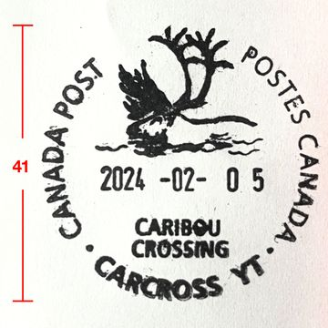
Carcross PO2nd caribouActive · 2017–2028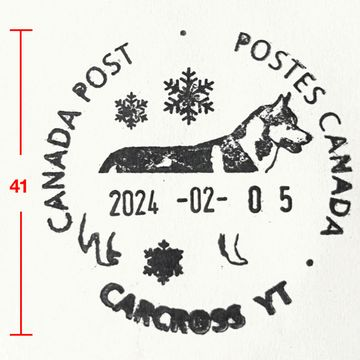
Carcross PO2nd huskyActive · 2017–2028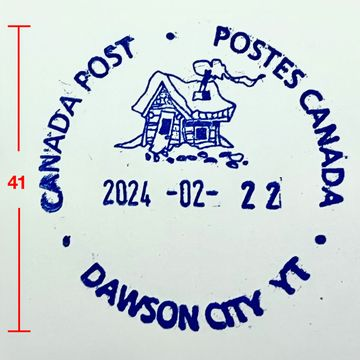
Dawson City POHouseActive · ?–present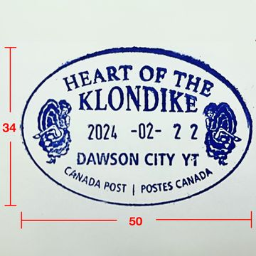
Dawson City POTwo dancersActive · ?–present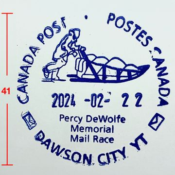
Dawson City POMail raceActive · ?–present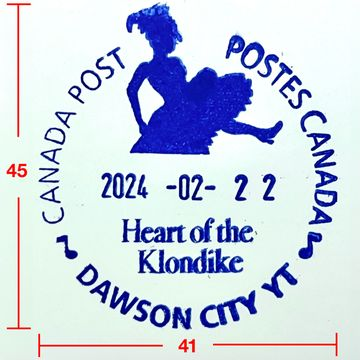
Dawson City POOne dancerActive · ?–present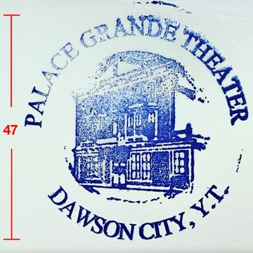
Dawson City POTheatreActive · ?–? Faro POHouseActive · ?–present
Faro POHouseActive · ?–present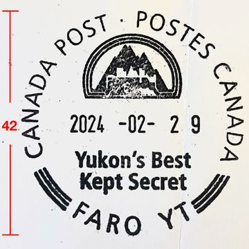
Faro POMountainActive · ?–present Haines Junction POKluaneActive · ?–present
Haines Junction POKluaneActive · ?–present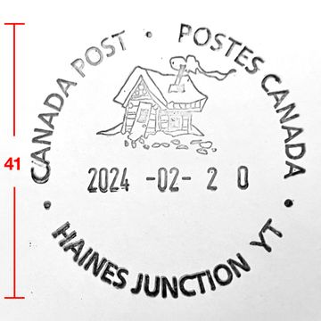
Haines Junction POHouseActive · ?–present Teslin POHouseActive · ?–present
Teslin POHouseActive · ?–present Watson Lake POHouseActive · ?–present
Watson Lake POHouseActive · ?–present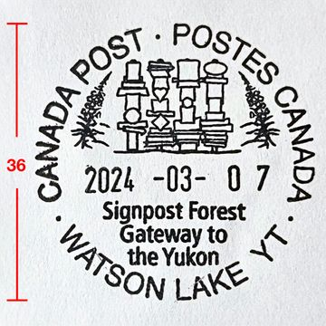
Watson Lake POSignpostActive · ?–present
Retired (17)
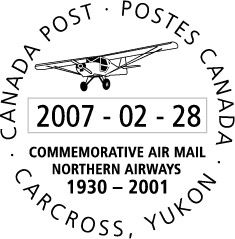
Carcross POAircraftExpired · 2001–?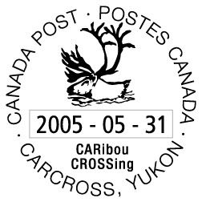
Carcross PO1st caribouExpired · 2005–? Carcross PO1st sled dog teamExpired · 2005–?
Carcross PO1st sled dog teamExpired · 2005–?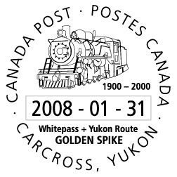
Carcross POTrainExpired · 2008–?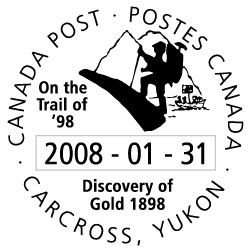
Carcross POGoldExpired · 2008–?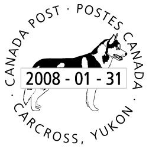
Carcross PO1st huskyExpired · 2008–?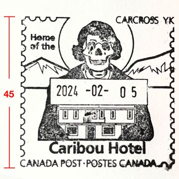
Carcross POHaunted CanadaExpired · 2014–2025 Dawson City POPost officeExpired · ?–?
Dawson City POPost officeExpired · ?–?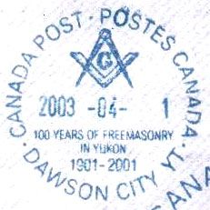
Dawson City POFreemasonryExpired · 2001–?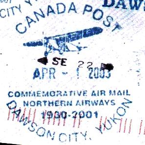
Dawson City POAircraftExpired · 2001–?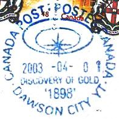
Dawson City POGoldExpired · 2003–? Faro POFestivalExpired · ?–2025
Faro POFestivalExpired · ?–2025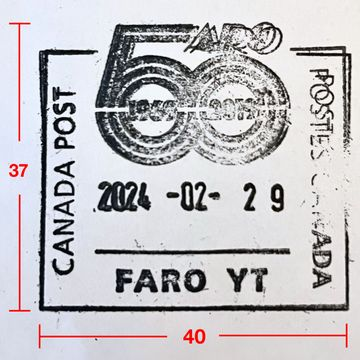
Faro POAnniversaryExpired · ?–?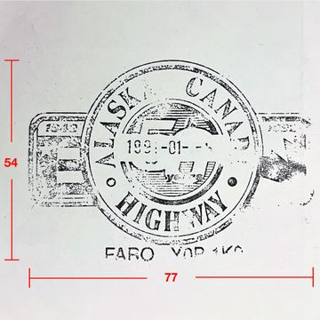
Faro POHighwayExpired · ?–? Faro POSheepExpired · 2003–?
Faro POSheepExpired · 2003–?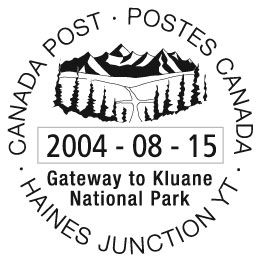
Haines Junction POKluane GatewayExpired · 2004–?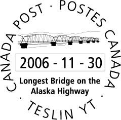
Teslin POBridgeExpired · 2006–?
Other provinces and territories: Alberta · British Columbia · Manitoba · New Brunswick · Newfoundland and Labrador · Nova Scotia · Ontario · Prince Edward Island · Quebec · Saskatchewan · Northwest Territories · Nunavut